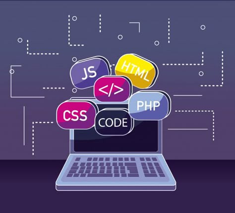

Teknik Informatika: Disiplin Ilmu yang Menentukan Arah Peradaban di Era Teknologi
Di era revolusi digital yang kita alami saat ini, hampir setiap aspek kehidupan manusia telah bertransformasi dan terkoneksi melalui teknologi. Dari bangun tidur hingga kembali beristirahat, kita dikelilingi oleh perangkat dan sistem yang menjalankan aplikasi, algoritma, dan berbagai solusi teknologi. Di balik semua ini, terdapat satu disiplin ilmu yang menjadi tulang punggung: Teknik Informatika. Bidang studi yang relatif baru ini telah menjadi salah satu jurusan paling bergengsi dan vital dalam peradaban modern, membentuk masa depan umat manusia dengan cara yang belum pernah terjadi sebelumnya.
Lulusan Teknik Informatika secara konsisten menempati posisi teratas dalam daftar jurusan dengan gaji awal tertinggi. Di Amerika Serikat, rata-rata gaji awal untuk lulusan S1 Teknik Informatika berkisar antara $70,000 hingga $100,000 per tahun. Bahkan di Indonesia, lulusan fresh graduate dari jurusan ini bisa mendapatkan gaji awal yang signifikan di atas rata-rata nasional. Laporan McKinsey Global Institute memperkirakan bahwa kebutuhan global akan profesional IT akan terus meningkat, dengan defisit talent yang diproyeksikan mencapai jutaan posisi dalam dekade mendatang. Ini memberikan para lulusan posisi tawar yang sangat kuat di pasar kerja
Teknik Informatika menjadi penggerak utama ekonomi digital yang terus tumbuh pesat. Menurut laporan dari World Economic Forum, ekonomi digital kini menyumbang lebih dari 15% dari GDP global dan diproyeksikan akan terus meningkat. Di Indonesia, ekonomi digital tumbuh dengan kecepatan luar biasa, dengan valuasi yang diperkirakan mencapai $130 miliar pada tahun 2025. Dari e-commerce, fintech, hingga layanan berbasis aplikasi lainnya - semua ini dimungkinkan berkat inovasi dan solusi yang dikembangkan oleh para ahli Teknik Informatika. Perusahaan-perusahaan unicorn seperti Gojek, Tokopedia, dan Traveloka dibangun dengan fondasi teknologi yang dirancang oleh lulusan-lulusan jurusan ini.
Seiring kita melangkah lebih jauh ke era digital, nilai dan relevansi Teknik Informatika akan semakin mengakar dalam fondasi masyarakat. Bagi para mahasiswa yang mempertimbangkan masa depan mereka, bagi para profesional yang mencari peluang baru, dan bagi para pemimpin yang membentuk kebijakan, memahami dan menghargai peran sentral Teknik Informatika bukanlah sebuah pilihan—melainkan sebuah keharusan dalam dunia yang semakin terhubung dan terdigitalisasi.
Dengan demikian, Teknik Informatika tidak hanya bergengsi dan penting hari ini, tetapi juga akan terus menjadi kekuatan pendorong utama di balik inovasi dan kemajuan peradaban manusia di masa depan.